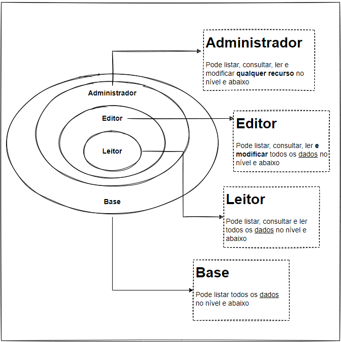
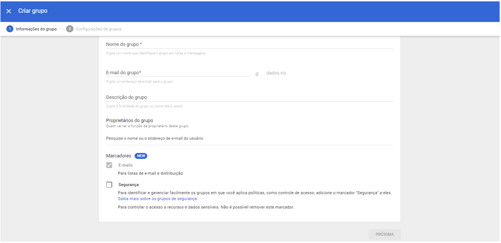
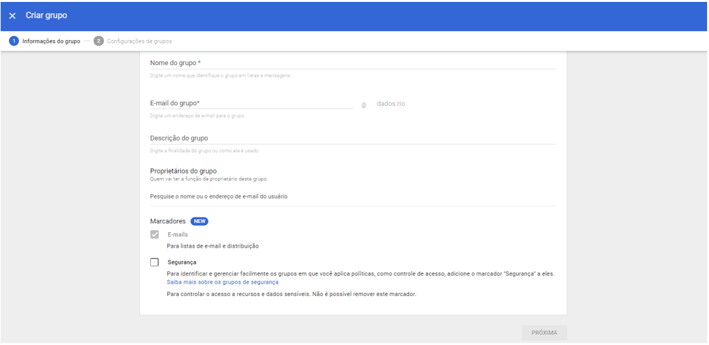
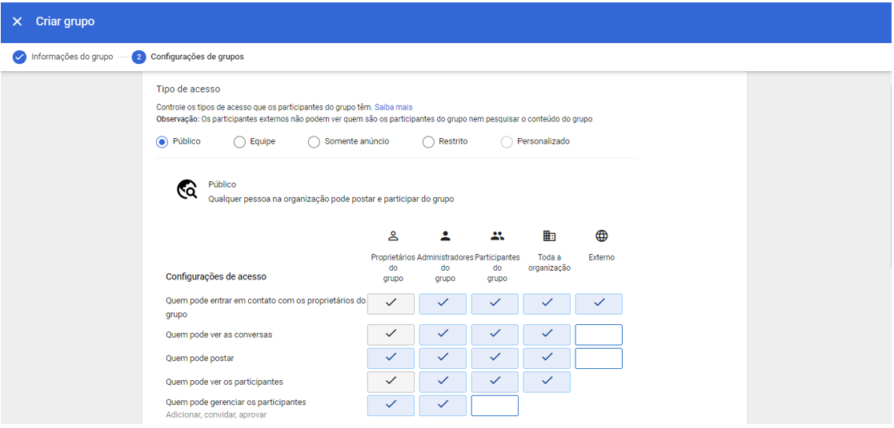
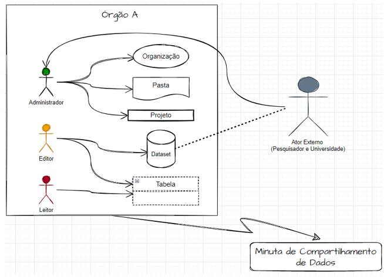
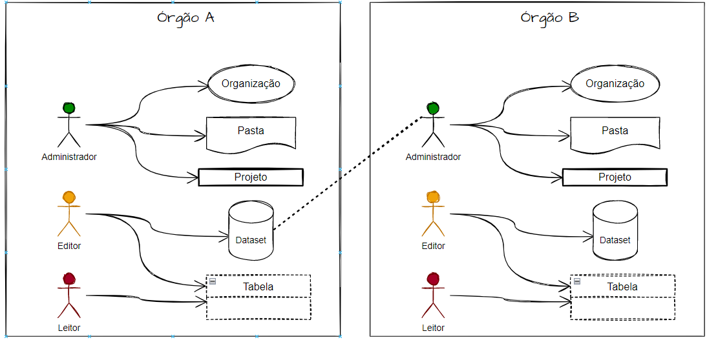
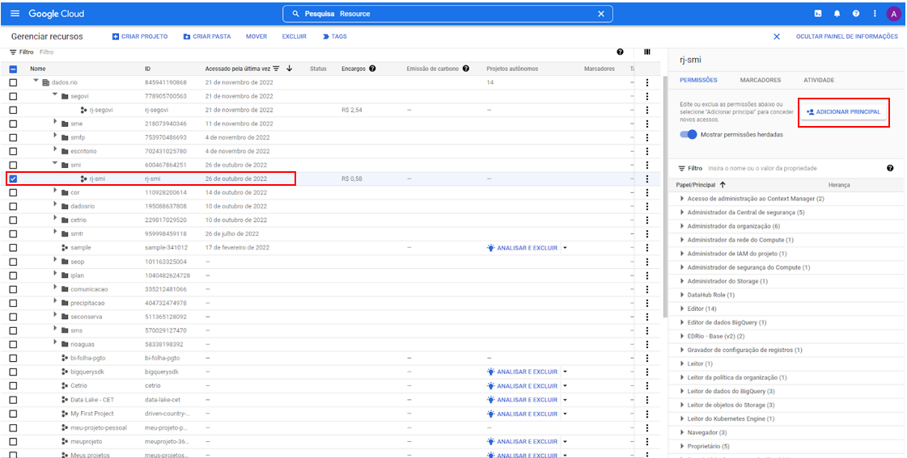
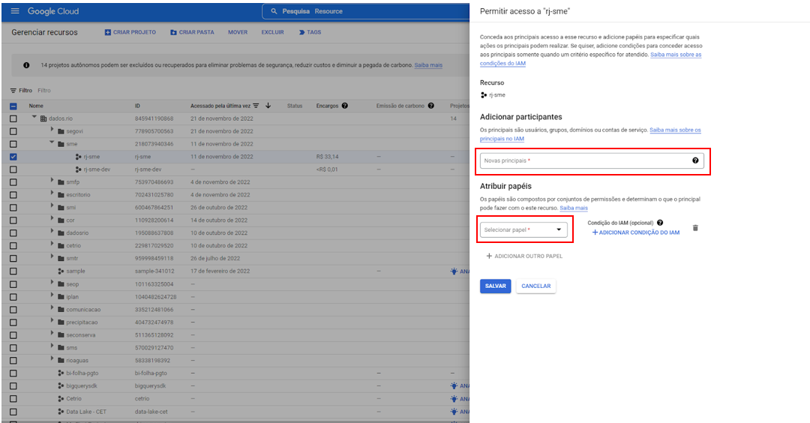
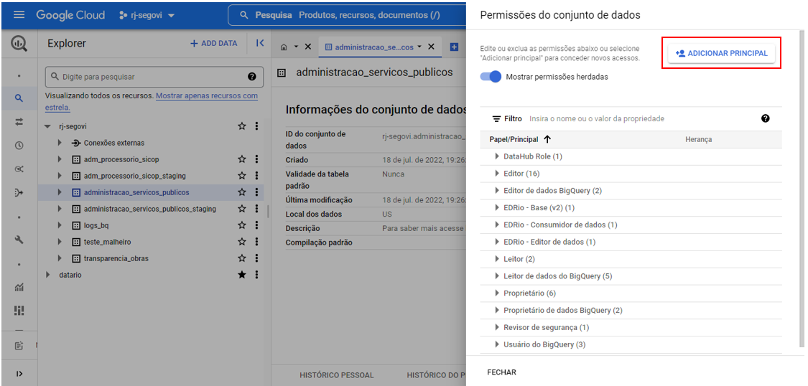
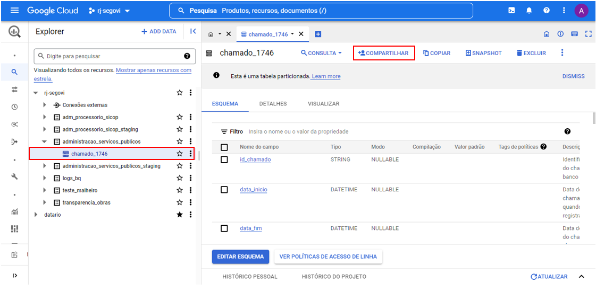

Governança de Acessos e Compartilhamento no Datalake
Definições Gerais
- Todo órgão terá um ponto focal para ser o contato com o ED, preferencialmente, quem for o responsável pela área de dados no órgão.
- Este ponto focal será o Administrador da Pasta e/ou do Projeto.
- O ponto focal será responsável pelo compartilhamento dos dados, quando solicitado por algum ator interno ou externo.
- Ele indicará os usuários conforme o nível de permissão de acesso (Editor ou Leitor).
- O ponto focal também será responsável por conceder o nível de acesso.
- O papel de editor será responsável pela edição necessária nas tabelas que o leitor (analista) julgar pertinente.
Definição dos papéis de acesso
- Trata-se do nível de permissão concedida aos usuários, divididos em três níveis:administrador, editor, leitor e base.

O papel base foi criado para visualização da existência das bases de dados. Com ele, pode-se listar as bases existentes, mas não pode consultar, ler os dados. O ponto focal, automaticamente, terá seu acesso definido como Administrador. Portanto, definirá qual papel os técnicos de seu órgão poderão exercer.
Compartimentação do projeto e definindo acesso aos dados
Em caso de órgãos que contenham unidades administrativas (sub-órgãos) com bases de dados próprias, projetos específicos, e independência relativa à gestão de dados, o acesso, assim como a divisão do Projeto na GCP ocorrerá da seguinte maneira:
O acesso será por grupos distintos, restringindo acesso apenas ao sub-órgão pertinente do usuário. A inserção do usuário ao sub-grupo acontecerá no momento da concessão da credencial de acesso ao Datalake.
Ex.:
Projeto: SMFP
Dataset’s: RH e EGP
Acesso: Grupo Leitor RH e Grupo Leitor EGP
Criando grupos e sub-grupos
Em admin.google.com/ac/groups, como na imagem abaixo, clique em Grupos que abrirá o painel central com a lista de grupos existentes.
 Em seguida, clique no botão Criar grupo e preencha o formulário que abrirá, como mostra a imagem abaixo.

Em seguida, clique no botão Criar grupo e preencha o formulário que abrirá, como mostra a imagem abaixo.

-
Para a criação de grupos, recomendamos padrão de formulação de nome do grupo e e-mail.
-
Para o nome do grupo sugere-se a sigla do órgão (ex.:SMFP) seguido do papel atribuído às funções do grupo (ex.:SMFP - LEITOR).
-
Enquanto para o e-mail, também devemos seguir a ordem de rj-(sigla do órgão)-(função do papel atribuído). Como, por exemplo:rj-smfp-leitor@dados.rio. A descrição do grupo segue livre.
Configurando o grupo
Após o preenchimento do formulário da etapa anterior, basta clicar em “Próxima”, para seguir a página seguinte de configuração, conforme imagem abaixo. Nesta etapa realizaremos a configuração do grupo será autorizar que todos da organização vejam o grupo, peçam acesso, interaja com outros participantes etc.
Neste caso, selecionamos a opção “Restrito” e desmarcamos a caixa referente ao “Externo”.

Inserindo usuários em seus respectivos grupos
Após a criação dos grupos segundo o nível de permissão de uso, retorno para a tela da lista de grupos, clicando em Grupos, como destaque em vermelho na imagem abaixo.

Em seguida, encontre o grupo de seu desejo para adicionar usuários conforme o perfil. Com a seta do mouse em cima da linha do grupo, surgirá opções para clicar, clique em Adicionar participantes, assim abrirá a tela abaixo.
Agora, basta adicionar o e-mail do usuário (domínio @dados.rio). Para encontrar o e-mail dos usuários clique em Usuários no canto esquerdo da tela, então surgirá a lista de usuários cadastrados com o domínio @dados.rio. Copie o e-mail desejado e preencha o campo da tela a seguir.
Repita o processo para cada usuário que deseja adicionar ao grupo.

Compartilhamento de Dados com atores externos
Em caso de compartilhamento de bases com atores externos (universidades, pesquisadores, iniciativa priva, startups etc) 
-
O solicitante deverá se manifestar oficialmente sobre o interesse em determinada base de dados.
-
Sua manifestação deverá conter:Tema, Objetivo, Justificativa, Possíveis produtos (análises, solução, software etc).
-
O concedente deverá ter acordo de compartilhamento padrão assinado, conforme modelo aprovado pela PGM.
-
Também deverá constar um Plano de Trabalho com os elementos pertinentes.
-
Após a deliberação sobre o compartilhamento dos dados, o modo de compartilhar, em caso de ser pela plataforma BigQuery, seguirá o mesmo modo que o compartilhamento entre órgãos e usuários internos. Entretanto, o usuário deverá possuir uma conta Google (um gmail, por exemplo) para acessar e o custo de processamento será de sua responsabilidade.
Compartilhamento de Dados com atores internos
O compartilhamento de dados entre usuários e/ou órgãos municipais é de responsabilidade legal do solicitante e concedente. Recomendamos que ao compartilhar dados com atores internos ou externos, seja concedido o papel de leitor. 
Considerações
Para acessar dados não-públicos de outro órgão, o solicitante deverá:
-
Solicitar formalmente ao órgão proprietário dos dados.
-
Se deferido, o concedente deverá notificar ao Escritório de Dados.
-
Deverá ser celebrado entre os órgãos o Acordo de Cooperação Padrão (PADM) com o Plano de Trabalho.
-
E o Gestor dos Dados (Papel de Administrador) compartilhará os dados via BigQuery.
Como compartilhar Projetos, Datasets e Tabelas
É importante ressaltar que no compartilhamento de cada elemento (projeto, dataset e tabela) você deverá conceder um papel ao usuário e para todos os elementos, obrigatoriamente, deverá considerar o nível Base, onde apenas a visualização do elemento será possível, sem mais qualquer outra opção de uso.
Somente o usuário com permissão de Administrador poderá realizar compartilhamento de projeto, dataset e tabelas.
Nota: Os papéis são complementares. Nesse sentido, ao atribuir um papel de nível maior, deve-se atribuir também todos os inferiores a ele. Exemplo:ao conceder o papel de “Editor” a um usuário, deve-se também conceder os papéis de “Leitor” e “Base”, pois são níveis inferiores.
Projetos
Para compartilhar um Projeto (e consequentemente todos os recursos que estão contidos nele), basta acessar a página do IAM (Identity and Access Management) do Projeto em questão, disponível pelo seguinte modelo de link:https://console.cloud.google.com/iam-admin/iam?project=NOME_DO_PROJETO.
Ao acessá-la, deve clicar em “Permitir acesso”, no topo esquerdo e preencher:
-
Novas principais:identidade do(s) usuário(s) (pode ser Gmail ou identidade @dados.rio)
-
Papéis:selecionar os desejados
Configurando a permissão por grupo
A concessão de acesso com as devidas permissões a usuários deve ser atribuída pela inserção do técnico no grupo pertinente ao nível de permissão que lhe foi permitido. Para isso, os grupos devem estar configurados para exercer o papel correspondente, conforme descrito no item 2. Sendo assim, deve seguir as orientações abaixo.
-
Na barra de pesquisa do GCP procure por “Resource Manage”, acessando a tela, aparecerá o projeto do órgão correspondente ao administrador.
-
Para prosseguir tenha o e-mail do grupo que deseja conceder permissão de acesso, de acordo com o nível. É possível encontrá-lo no painel de administrador.
-
Selecione o projeto que deseja conceder e em seguida clique em “Adicionar Principal” que abrirá uma aba ao lado direito para realizar a configuração.

- Em “Adicionar Participantes” insira o e-mail do grupo que deseja configurar acesso.

- O passo seguinte devemos ter atenção, pois é neste momento que atribuirá o devido papel ao grupo. Em “Atribuir papeis”, abra a caixa suspensa e selecione, em “Acesso rápido” o papel que deseja atribuir. A imagem abaixo ilustra o que se relata.

Destacamos que os papéis devem ser concedidos seguindo a hierarquia apresentada no item 2. De modo que:
-
Administrador: Receberá papel “Base”, “Administrador”, “Editor” e “Leitor”.
-
Editor: Receberá papel “Base”, “Editor” e “Leitor”
-
Leitor: Receberá papel “Base” e “Leitor”.
-
No caso dessas múltiplas concessões de configuração, deve agir da seguinte maneira, conforme imagem abaixo ilustra.
 Clicando em “+ Adicionar outro Papel” uma nova caixa surgirá, possibilitando a inserção de um novo papel. Então, o processo de inclusão de papéis se repetirá até que atenda a necessidade da configuração.
Clicando em “+ Adicionar outro Papel” uma nova caixa surgirá, possibilitando a inserção de um novo papel. Então, o processo de inclusão de papéis se repetirá até que atenda a necessidade da configuração.
Datasets
Para compartilhar Dataset (conjunto de dados) selecione o dataset desejado, dentro do respectivo projeto.

Há duas opções para iniciar o compartilhamento:
- nos três pontos ao lado do nome do dataset, você pode clicar e selecionar “compartilhar”.
- Com o dataset selecionado e aparecendo ao lado direito, conforme imagem acima, você pode clicar em “+compartilhamento”.
Em seguida selecione “Permissões”. Feito isso aparecerá uma aba ao lado direito para a concessão do nível de acesso permitido que você poderá disponibilizar ao solicitante.

Em “Adicionar Principal” deverá informar o e-mail do usuário solicitante.E posterior a isso, deverá atribuir o papel concedido.

A atribuição de papéis deverá seguir a orientação exposta no item 5. de Configurando a permissão por grupo.
Tabelas
Para o compartilhamento de Tabelas, o procedimento é similar ao de Dataset, porém deve ser feita para cada tabela compartilhada.
Selecione a tabela que deseja compartilhar para proceder a abertura da mesma.

Em seguida, selecione “+compartilhar”, então surgirá uma aba no lado direito para informar o e-mail do solicitante e atribuir o papel de uso.Este processo se repete como apresentado anteriormente.